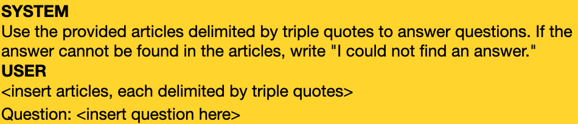
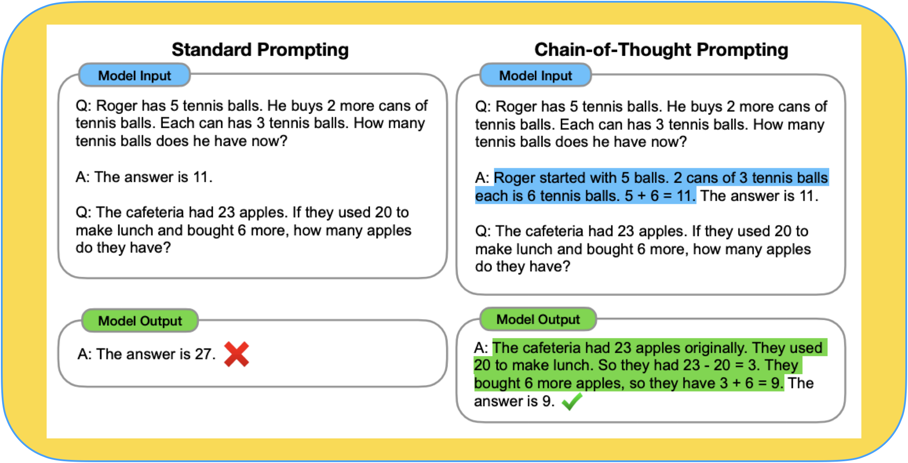
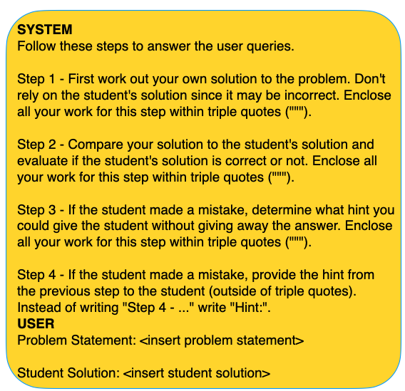
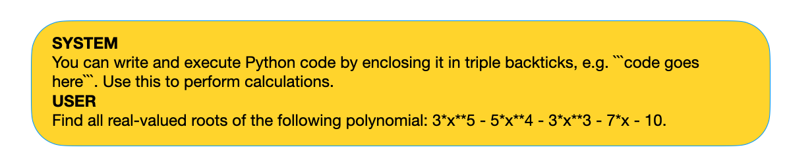
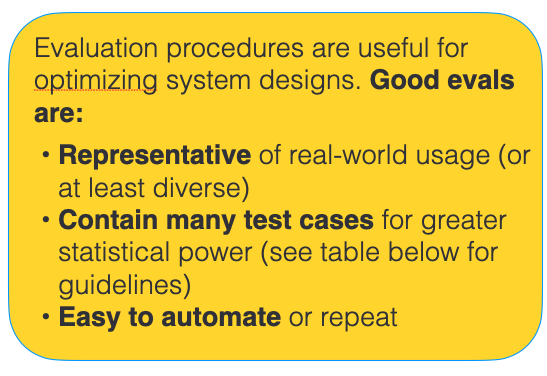
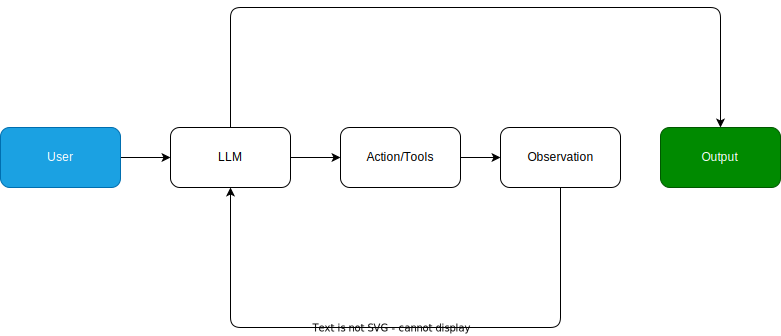

class: center, middle # Building Text-Based Applications with the ChatGPT API & LangChain ### Lucas Soares #### 04-03-2024 --- # Quick 'Interactivity Notes' - The presentation will be organized into the following structure: -- - __Presentation Block__ -- - __Notebook Demo__ -- - __Quick Q&A + Summary__ -- - __Optional Exercise__ During Q&A (for those that don't have questions and want to try something out) -- - Repeat --- # Large Language Models Large Language Models Predict the Next Word <img src="../notebooks/assets-resources/llm_predicts_pancakes.png" alt="LLM Predicts Pancakes" style="width: 600px;"/> --- # Applications of Large Language Models - Conversational ChatBots <img src="../notebooks/assets-resources/chatgpt-demo.png" alt="ChatGPT Demo" style="width: 600px;"/> --- # Applications of Large Language Models - Search Engines <img src="../notebooks/assets-resources/google-icon.png" alt="Google Icon" style="width: 600px;"/> --- # Applications of Large Language Models - Translation <img src="../notebooks/assets-resources/google-translate.png" alt="LLM Translation" style="width: 600px;"/> -- - And so much more from Q&A over PDFs to personalized tutoring. --- # Transformers -- They generate text one word at a time. For example: -- 1. Input: "I love eating ________" -- 2. <p>Tokenize: <span style="color: purple;">I</span> <span style="color: green;">love</span> <span style="color: orange;">eating</span></p> -- 3. Embedding: [0.78, 1.45, 0.35 .....] -- 4. Positional encoding: <p><span style="color: purple;">1. I</span> <span style="color: green;">2. love</span> <span style="color: orange;">3. eating</span></p> -- 5. <div>Attention: Understands context → "I" (Lucas) and "love": things that Lucas loves. Cross references that against things that "Lucas" eats leading to ... → "PANCAKES!!!"</div> -- <img src="../notebooks/assets-resources/pancakes-delicious.jpg" width="150px;"> --- # Transformers <img src="../notebooks/assets-resources/transformers-architecture.png" alt="Transformers Architecture" style="width: 800px;"/> --- # Benefits of Large Language Models - Multi-task Capability - LLMs find applications in content generation, question answering, translation, tutoring, and personal assistants. -- - Fine-tuning - LLMs can usually be fine tuned with a relatively small amount of data, making them adaptable to a wide range of tasks. -- - Scalability - LLMs demonstrate excellent scalability to very large capacity networks and huge datasets. --- --- # Limitations and Ethical Considerations ## LLMs are far from perfect -- - __Knowledge Limit__: LLMs have a cutoff point for their knowledge. -- - __Understanding Limit__: LLMs do not understand text in the same way humans do. They don't have beliefs or desires; they simply predict what comes next based on their training. -- - __Misuse__: LLMs can hallucinate and produce false or harmful content -- - __Reproducibility__: Unpredictability of LLM behavior. Watkins 2023 -- - __Data Privacy and Bias__: Ethical considerations should extend to the acquisition of data for training additional models. Models may have biases; their use should be transparent and biases mitigated. Watkins 2023 --- class: center, middle <img src="../notebooks/assets-resources/panda-letters-app-demo.png" width="800px"> <h1> <span style="background-color: lightgreen"> Demo App - Panda Letters </span> </h1> --- # Q&A & Summary - __LLMs predict the next word__ and generate human-like text. - __LLMs power diverse applications__ including conversational chatbots, search engines, and translation services, demonstrating their versatility in handling various language tasks. - __Transformer architecture__ processes text sequentially, utilizing mechanisms like tokenization, embedding, positional encoding, and attention to understand context and generate relevant outputs. - __Advantages of LLMs__: LLMs are multi-taskers capable of content generation, question answering, and more, with the ability to be fine-tuned for specific tasks and scale effectively to handle large datasets and complex models. - __Benefits and Limitations__: Despite their benefits (multi-tasking, fine-tuning etc..), LLMs have limitations, including a fixed knowledge base, lack of true understanding, potential for misuse, and ethical concerns around data privacy and inherent biases. - <span style="color: grey">Optional Exercise</span> - <span style="color: grey">Set up your OpenAI API key and prepare for the practical demos</span> --- class: center, middle # Break --- # Prompt Basics <img src="../notebooks/assets-resources/prompt-basics/prompt-basics.001.jpeg" width="800px" style="margin-left: -20px; margin-top: -40px;"> --- # Prompt Basics <img src="../notebooks/assets-resources/prompt-basics/prompt-basics.002.jpeg" width="800px" style="margin-left: -20px; margin-top: -40px;"> --- # Prompt Basics <img src="../notebooks/assets-resources/prompt-basics/prompt-basics.003.jpeg" width="800px" style="margin-left: -20px; margin-top: -40px;"> --- # Prompt Basics ## Compomnents of the prompt <img src="../notebooks/assets-resources/prompt-basics/prompt-basics.004.jpeg" width="800px" style="margin-left: -20px; margin-top: -40px;"> --- # Prompt Basics ## Compomnents of the prompt: <span style="color: green">instruction</span> <img src="../notebooks/assets-resources/prompt-basics/prompt-basics.005.jpeg" width="800px" style="margin-left: -20px; margin-top: -40px;"> --- # Prompt Basics ## Compomnents of the prompt: <span style="color: green">instruction</span>, <span style="color: black">context</span> <img src="../notebooks/assets-resources/prompt-basics/prompt-basics.006.jpeg" width="800px" style="margin-left: -20px; margin-top: -40px;"> --- # Prompt Basics ## Compomnents of the prompt: <span style="color: green">instruction</span>, <span style="color: black">context</span> <span style="color: #0d8eb9">input data</span> <img src="../notebooks/assets-resources/prompt-basics/prompt-basics.007.jpeg" width="800px" style="margin-left: -20px; margin-top: -40px;"> --- # Prompt Basics ## Compomnents of the prompt: <span style="color: green">instruction</span>, <span style="color: black">context</span> <span style="color: #0d8eb9">input data</span> , <span style="color: red">output indicator</span> <img src="../notebooks/assets-resources/prompt-basics/prompt-basics.008.jpeg" width="800px" style="margin-left: -20px; margin-top: -40px;"> --- # Introduction to the ChatGPT API -- - The ChatGPT API allows you to use OpenAI's models to generate human-like text based on the input you provide. -- - Basic structure of calling the API: ```python from openai import OpenAI client = OpenAI() def get_response(prompt_question): response = client.chat.completions.create( model="gpt-3.5-turbo-0125", messages=[{"role": "system", "content": "You are a helpful research and programming assistant"}, {"role": "user", "content": prompt_question}] ) return response.choices[0].message.content ``` -- - Required parameters: `model`, `messages` --- class: center, middle <h2> <span style="background-color: lightgreen"> Notebook Demo 2.0 - Intro to ChatGPT API & Prompt Basics </span> </h2> --- # Q&A & Summary - __Prompts__ are the inputs to LLMs__ - __Prompts__ allow users to __guide the model's responses__ and generate specific outputs. - __Components of a prompt:__ instruction, context, input data, and output indicator. - __ChatGPT API: __ programatic access to GPT models by OpenAI - __ChatGPT API: __required parameters: `model`, `messages` - <span style="color: grey"> __Optional Exercise During Q&A__ </span> ``` Create a prompt that summarizes a piece of text in a format/structure of your choice. ``` --- class: center, middle # Break --- # Prompt Engineering Guide -- ## What is Prompt Engineering? -- - Prompt engineering: Discipline for engineering prompts -- - The goal is to __design good prompts__ -- - <span style="background-color: #FFDB58"> Process for developing prompts that yield high performance across tasks. </span> --- # Prompt Engineering Guide ## OpenAI's Guide for Building Good Prompts -- - __Strategy 1: Write clear instructions__ -- - <span style="color: red">Bad: </span> Who’s president? -- - <span style="color: green">Better:</span> Who was the president of Mexico in 2021? --- # Prompt Engineering Guide ## OpenAI's Guide for Building Good Prompts - __Strategy 2: Provide reference text__ --  --- # Prompt Engineering Guide ## OpenAI's Guide for Building Good Prompts - __Strategy 3: Break tasks into subtasks__ --  --- # Prompt Engineering Guide ## OpenAI's Guide for Building Good Prompts - __Strategy 4: Give the model time to think__ --  --- # Prompt Engineering Guide ## OpenAI's Guide for Building Good Prompts - __Strategy 5: Use external tools__ --  --- # Prompt Engineering Guide ## OpenAI's Guide for Building Good Prompts - __Strategy 6: Test changes systematically__ --  --- class: center, middle <h2> <span style="background-color: lightgreen"> Notebook Demo 2.1 - Applying Prompt Engineering Strategies </span> </h2> --- # Q&A & Summary - __Prompt Engineering__ is the discipline for engineering prompts - __Prompt Engineering__ aims to design prompts that yield high performance across tasks. - __OpenAI's Guide for Building Good Prompts__ includes strategies like writing clear instructions, providing reference text, breaking tasks into subtasks, giving the model time to think, using external tools, and testing changes systematically. - <span style="color: grey"> __Optional Exercise During Q&A__ </span> ``` Craft a prompt that can answer questions about a specific topic. Remember to incorporate the strategies discussed. ``` --- class: center, middle # Break --- <img src="../notebooks/assets-resources/fine-tuning-slides/fine-tuning-slides.001.jpeg" alt="Fine Tuning 1" style="width: 800px;"/> --- <img src="../notebooks/assets-resources/fine-tuning-slides/fine-tuning-slides.002.jpeg" alt="Fine Tuning 2" style="width: 800px;"/> --- <img src="../notebooks/assets-resources/fine-tuning-slides/fine-tuning-slides.003.jpeg" alt="Fine Tuning 3" style="width: 800px;"/> --- <img src="../notebooks/assets-resources/fine-tuning-slides/fine-tuning-slides.004.jpeg" alt="Fine Tuning 4" style="width: 800px;"/> --- <img src="../notebooks/assets-resources/fine-tuning-slides/fine-tuning-slides.005.jpeg" alt="Fine Tuning 5" style="width: 800px;"/> --- <img src="../notebooks/assets-resources/fine-tuning-slides/fine-tuning-slides.006.jpeg" alt="Fine Tuning 6" style="width: 800px;"/> --- <img src="../notebooks/assets-resources/fine-tuning-slides/fine-tuning-slides.007.jpeg" alt="Fine Tuning 7" style="width: 800px;"/> --- <img src="../notebooks/assets-resources/fine-tuning-slides/fine-tuning-slides.008.jpeg" alt="Fine Tuning 8" style="width: 800px;"/> --- <img src="../notebooks/assets-resources/fine-tuning-slides/fine-tuning-slides.009.jpeg" alt="Fine Tuning 9" style="width: 800px;"/> --- <img src="../notebooks/assets-resources/fine-tuning-slides/fine-tuning-slides.010.jpeg" alt="Fine Tuning 10" style="width: 800px;"/> --- <img src="../notebooks/assets-resources/fine-tuning-slides/fine-tuning-slides.011.jpeg" alt="Fine Tuning 11" style="width: 800px;"/> --- <img src="../notebooks/assets-resources/fine-tuning-slides/fine-tuning-slides.012.jpeg" alt="Fine Tuning 12" style="width: 800px;"/> --- <img src="../notebooks/assets-resources/fine-tuning-slides/fine-tuning-slides.013.jpeg" alt="Fine Tuning 13" style="width: 800px;"/> --- <img src="../notebooks/assets-resources/fine-tuning-slides/fine-tuning-slides.014.jpeg" alt="Fine Tuning 14" style="width: 800px;"/> --- <img src="../notebooks/assets-resources/fine-tuning-slides/fine-tuning-slides.015.jpeg" alt="Fine Tuning 15" style="width: 800px;"/> --- <img src="../notebooks/assets-resources/fine-tuning-slides/fine-tuning-slides.016.jpeg" alt="Fine Tuning 16" style="width: 800px;"/> --- <img src="../notebooks/assets-resources/fine-tuning-slides/fine-tuning-slides.017.jpeg" alt="Fine Tuning 17" style="width: 800px;"/> --- <img src="../notebooks/assets-resources/fine-tuning-slides/fine-tuning-slides.018.jpeg" alt="Fine Tuning 18" style="width: 800px;"/> --- <img src="../notebooks/assets-resources/fine-tuning-slides/fine-tuning-slides.019.jpeg" alt="Fine Tuning 19" style="width: 800px;"/> --- <img src="../notebooks/assets-resources/fine-tuning-slides/fine-tuning-slides.020.jpeg" alt="Fine Tuning 20" style="width: 800px;"/> --- <img src="../notebooks/assets-resources/fine-tuning-slides/fine-tuning-slides.021.jpeg" alt="Fine Tuning 21" style="width: 800px;"/> --- <img src="../notebooks/assets-resources/fine-tuning-slides/fine-tuning-slides.022.jpeg" alt="Fine Tuning 22" style="width: 800px;"/> --- <img src="../notebooks/assets-resources/fine-tuning-slides/fine-tuning-slides.023.jpeg" alt="Fine Tuning 23" style="width: 800px;"/> --- <img src="../notebooks/assets-resources/fine-tuning-slides/fine-tuning-slides.024.jpeg" alt="Fine Tuning 24" style="width: 800px;"/> --- <img src="../notebooks/assets-resources/fine-tuning-slides/fine-tuning-slides.025.jpeg" alt="Fine Tuning 25" style="width: 800px;"/> --- <img src="../notebooks/assets-resources/fine-tuning-slides/fine-tuning-slides.026.jpeg" alt="Fine Tuning 26" style="width: 800px;"/> --- # What is Langchain? -- - __LangChain is a framework that facilitates creation of LLM-based applications__ -- - __Main features__: -- - components -- - off-the-shelf-chains -- - Meaning: LangChain gives you building blocks for building interesting and powerful LLM applications --- # LangChain Components -- ## Models -- - Abstractions over the LLM APIs like the ChatGPT API -- ```python from langchain_openai import ChatOpenAI chat_model = ChatOpenAI(model="gpt-3.5-turbo-0125") output = chat_model.invoke("I am teaching a live-training\ about LLMs!") print(output.content) ``` --- # LangChain Components -- ## Prompt Templates -- - Abstractions over standard prompts to LLMs -- ```python from langchain_core.prompts import ChatPromptTemplate prompt = ChatPromptTemplate.from_template( """Show me 5 examples of this concept: {concept}""" ) prompt.format(concept="animal") # Output # 'Human: Show me 5 examples of this concept: animal' ``` ??? When I say Abstraction I mean for example that you can treat pieces of text in a regular prompt like a variable you can dynamically change without modifying the rest of the prompt. --- # LangChain Components -- ## Output Parsers -- - Translates raw output from LLM to a workable format -- ```python from langchain_core.output_parsers import StrOutputParser output_parser = StrOutputParser() ``` --- # Chains in LangChain -- ## Chain = Model + Prompt + Output Parser -- - Chains are the building blocks in LangChain -- - They are used to compose abstractions that go from simple to complex components -- ```python llm = ChatOpenAI(model="gpt-3.5-turbo-0125") prompt = ChatPromptTemplate.from_template(""" Write 5 concepts that are fundamental to learn about {topic}. """) chain = prompt | llm | output_parser chain.invoke({"topic": "Artificial Neural Networks"}) ``` --- # LCEL - LangChain Expression Language ## Composing Chains with LCEL -- - LCEL is a powerful, declarative language designed to streamline the composition of complex chains in the LangChain framework. -- - Pipe syntax <img src="../notebooks/assets-resources/lcel-image.png" alt="LCEL" width="300px;"> -- ```python chain = prompt | llm | output_parser ``` -- - Allows you to build complex chain pipelines with a simple standard interface --- # LCEL - Runnables - To facilitate creation of custom chains, LangChain has implemented a __"Runnable" protocol__. -- - The standard interface includes `stream`, `invoke`, and `batch` methods. Async methods are also available -- - The input type and output type vary by component: <img src="../notebooks/assets-resources/components_input_output.png" alt="Components Input Output" style="width: 600px;"/> ??? - `stream`: Stream back chunks of the response - `invoke`: Call the chain on an input - `batch`: Call the chain on a list of inputs --- class: center, middle <h1> <span style="background-color: lightgreen"> Notebook Demo - Intro to LangChain </span> </h1> --- # Q&A & Summary - __LLMs can predict the next word in a sequence__. ("I Like eating...? ;P ") - __LangChain framework:__ eases the creation of LLM-based applications, featuring chains and the following basic components: - __Models__: Abstractions over LLM APIs (e.g ChatGPT). - __Prompt Templates__: Abstractions over prompts (makes them dynamic). - __Output Parsers__: Converts LLM outputs into usable formats (e.g string, json). - __Chains__ are the building blocks in LangChain, composed of Models, Prompt Templates, and Output Parsers. - __LCEL__ is a declarative language that users the Unix pipe symbol to build complex chain pipelines with a simple standard interface. - <span style="color: red"> __Optional Exercise During Q&A__ </span> ``` Create a simple chain for summarization of content. ``` ??? <span style="color: red">Maybe add a live chat summary?</span> --- class: center, middle # Break 5 minutes --- # LangChain for Chat Over Documents <img src="../notebooks/assets-resources/rag-docs.png"> -- - RAG = __R__etrieval __A__ugmented __G__eneration -- - It's about connecting LLMs to documents like PDFs, Text files, HTML, etc. -- - How do we get around the context length limitations of LLMs? -- - Quick Answer is __Embeddings__! --- # LangChain for Chat Over Documents <img src="../notebooks/assets-resources/rag-docs.png"> - Embeddings are vectorized representations of text <img src="../notebooks/assets-resources/embeddings.png" alt="Embeddings" style="width: 600px;"/> --- # LangChain for Chat Over Documents <img src="../notebooks/assets-resources/embeddings-similarity.png" alt="Embeddings Similarity" style="width: 600px;"/> --- # LangChain for Chat Over Documents <img src="../notebooks/assets-resources/embeddings-similarity2.png" alt="Embeddings Similarity" style="width: 600px;"/> - Embeddings capture content and meaning --- # LangChain for Chat Over Documents <img src="../notebooks/assets-resources/vectordb.png" alt="Embeddings Similarity" style="width: 600px;"/> - Embeddings capture content and meaning - Vector DBs -- - How to build RAG systems with LangChain? --- # LangChain for Chat Over Documents -- <img src="../notebooks/assets-resources/rag-langchain.png" alt="RAG LangChain" style="width: 600px;"/> -- - Load -- - Split -- - Embed -- - Store --- # LangChain for Chat Over Documents <img src="../notebooks/assets-resources/rag-langchain-retrieval.png" alt="RAG LangChain" style="width: 600px;"/> -- - Retrieval Piepeline -- - Input Question -- - Retrieve Relevant Documents -- - LLM uses the prompt question + retrieved data to produce a final answer --- # LangChain for Chat Over Documents - Sample Code ```python from langchain import hub from langchain_community.vectorstores import Chroma from langchain_openai import ChatOpenAI, OpenAIEmbeddings from langchain.document_loaders import PyPDFLoader from langchain.chains import RetrievalQA pdf_path = "path-to-pdf.pdf" loader = PyPDFLoader(pdf_path) # LOAD pdf_docs = loader.load_and_split() # SPLIT embeddings = OpenAIEmbeddings() # EMBED vectordb = Chroma.from_documents(pdf_docs, embedding=embeddings) # STORE retriever = vectordb.as_retriever() llm = ChatOpenAI(model="gpt-3.5-turbo-0125") pdf_qa = RetrievalQA.from_llm(llm=llm, retriever=retriever) # RETRIEVE pdf_qa.invoke("What is this paper about?") # ANSWER ``` -- <h2> <span style="background-color: lightgreen"> Notebook Demo - Q&A with LangChain </span> </h2> --- # Q&A & Summary - __RAG__ = __R__etrieval __A__ugmented __G__eneration - __RAG__ is about connecting LLMs to documents like PDFs, Text files, HTML, etc. - __Embeddings__ are vectorized representations of text that capture content and meaning. - __Vector DBs__ are used to store and retrieve embeddings. - __RAG__ systems with LangChain are built using a pipeline that includes loading, splitting, embedding, and storing documents. - <span style="color: red"> __Optional Exercise During Q&A__ </span> ``` Create a simple RAG system with LangChain that can answer questions about pdfs or csvs. ``` ??? <span style="color: red">Maybe add a live chat summary?</span> --- class: center, middle # Break 5 minutes --- # Building Agents with LangChain -- ## The Agent Loop --  --- # Key LangChain Components for Agents ## Schema -- - LangChain provides many abstractions for ease of use -- - **AgentAction**: Represents the action an agent should take. -- - **AgentFinish**: Represents the final result to return to the user. -- - **Intermediate Steps**: Previous actions and outputs for the current agent run. -- - **Agent**: Chain responsible for deciding the next step, powered by a language model. --- # Agent Inputs and Outputs ## Agent Inputs -- - Key-value mapping. -- - Required key: `intermediate_steps`. -- ## Agent Outputs -- - Next actions or final response (AgentActions or AgentFinish). -- - Handled by the output parser. --- # AgentExecutor - The agent executor is the runtime for an agent. -- - It calls the agent, executes the actions it chooses, passes the action outputs back to the agent, and repeats. -- - In pseudocode, this looks roughly like: ``` next_action = agent.get_action(...) while next_action != AgentFinish: observation = run(next_action) next_action = agent.get_action(..., next_action, observation) return next_action ``` -- - Runtime handles things like: - Handling cases where the agent selects a non-existent tool -- - Handling cases where the tool errors -- - Handling cases where the agent produces output that cannot be parsed into a tool invocation -- - Logging and observability at all levels (agent decisions, tool calls) to stdout and/or to LangSmith. <p style="font-size: 14px; margin-top: 50px; margin-left: 800px"> <a href="https://python.langchain.com/docs/modules/agents/concepts">LangChain Agents Documentation</a> </p> --- class: center, middle # --- # Tools in LangChain -- - Functions that an agent can call. -- - Consists of: -- - Input schema for the tool. -- - Function to run. -- - Important for building a working agent. --- # Langchain Toolkits -- <div style="display: flex; align-items: left; margin-top: 50px;"> <div style="flex: 1;"> <ul> <li>LangChain provides a wide set of toolkits.</li> <li>Groups of 3-5 tools for specific objectives.</li> <li>Example: GitHub toolkit for interacting with GitHub.</li> </ul> </div> <div style="flex: 1;"> <img src="../notebooks/assets-resources/langchain-toolkits.png" alt="LangChain Toolkits" style="width: 400px;"/> </div> </div> --- class: center, middle # Let's Build Agents! <h2><span style="background-color: lightgreen"> Notebook Demo - Building LLM Agents with LangChain; Github Agent; Research Assistant </span> </h2> --- # Q&A & Summary - __LangChain__ provides abstractions for building agents, including AgentAction, AgentFinish, and Agent. - __AgentExecutor__ is the runtime for an agent, handling agent decisions, tool calls, and observability. - __Tools__ in LangChain are functions that an agent can call, consisting of an input schema and a function to run. - __LangChain__ provides a wide set of toolkits, groups of 3-5 tools for specific objectives, an example is GitHub toolkit for interacting with GitHub. - <span style="color: red"> __Optional Exercise During Q&A__ </span> ``` Create a simple agent that can create a schedule for you given a table of tasks and deadlines. table format = task | date ``` # ??? <span style="color: red">Maybe add a live chat summary?</span> --- class: center, middle # Break 5 minutes --- # LangServe Super Quick Intro - LangServe helps developers deploy LangChain runnables and chains as a REST API. -- - It is integrated with FastAPI and uses pydantic for data validation. -- - It provides a client that can be used to call into runnables deployed on a server. -- - Input and Output schemas automatically inferred from your LangChain object, and enforced on every API call, with rich error messages -- - Efficient /invoke/, /batch/ and /stream/ endpoints with support for many concurrent requests on a single server -- - Playground page at /playground/ with streaming output and intermediate steps -- - Built-in (optional) tracing to LangSmith, just add your API key (see Instructions) -- - Use the client SDK to call a LangServe server as if it was a Runnable running locally (or call the HTTP API directly) -- <h2> <span style="background-color: lightgreen"> Notebook Demo - Deployment with LangServe </span> </h2> --- # Final Q&A & Summary - __LangServe__ helps developers deploy LangChain runnables and chains as a REST API. - It is integrated with FastAPI and uses pydantic for data validation. --- # References - [LangChain Intro Docs](https://python.langchain.com/docs/get_started/introduction) - [LangChain Documentation](https://python.langchain.com/docs/modules/agents/concepts) - [Gen Agents](https://arxiv.org/pdf/2304.03442.pdf) - [WebGPT](https://www.semanticscholar.org/paper/WebGPT%3A-Browser-assisted-question-answering-with-Nakano-Hilton/2f3efe44083af91cef562c1a3451eee2f8601d22) - [OpenAI](https://openai.com/) - [OpenAI Function Calling](https://platform.openai.com/docs/guides/function-calling) - [AutoGPT](https://github.com/Significant-Gravitas/AutoGPT) - [GPT-Engineer](https://github.com/gpt-engineer-org/gpt-engineer) - [BabyAGI](https://github.com/yoheinakajima/babyagi) - [Karpathy on Agents](https://www.youtube.com/watch?v=fqVLjtvWgq8) - [ReACT Paper](https://arxiv.org/abs/2210.03629) ---